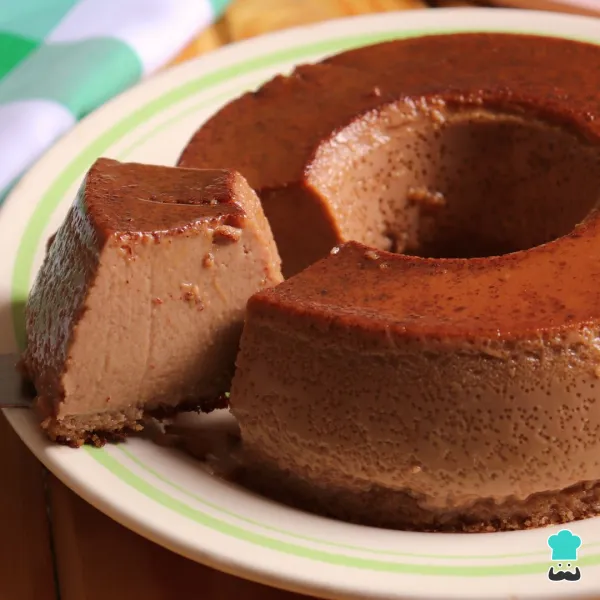
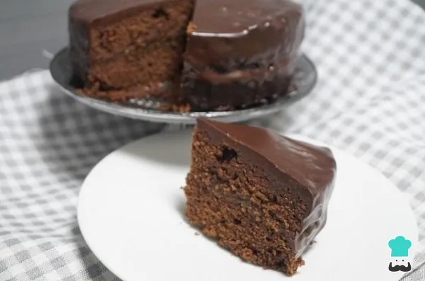

Comece separando os ingredientes para fazer as suas almôndegas.
Em uma tigela grande coloque a carne, o alho, a cebola, o ovo e tempere com sal e pimenta a gosto e misture bem com as mãos.
Agora junte o queijo parmesão, a salsinha ou coentro e a farinha de rosca e amasse novamente até ficar tudo bem incorporado.
Modele as almôndegas no tamanho que preferir. Se necessário, unte as mãos com um pouco de azeite.
Leve uma frigideira ao fogo médio, adicione o azeite e doure todas as almôndegas.
Sirva em seguida da forma que preferir!
Pudim de Nutella

Ingredientes:
1 lata de leite condensado
1 lata de leite integral
1 xícara de açúcar
300 gramas de Nutella
3 ovos
Modo de Preparo:
Comece separando os ingredientes do seu pudim de Nutella. Se optar por fazer esse pudim com calda é só colocar o açúcar na forma e levar ao fogo para caramelizar. Reserve enquanto prepara a massa.
No liquidificador, coloque todos os outros ingredientes e bata até misturar bem.
Despeje o conteúdo na forma e leve ao forno preaquecido a 180 graus no banho-maria por 45 minutos ou até ficar firme.
Deixe esfriar e leve à geladeira por pelo menos 2 horas.
Seu pudim de Nutella está pronto!
Bolo de Chocolate

Ingredientes:
Massa:
4 ovos
4 colheres de sopa de chocolate em pó
2 colheres de sopa de manteiga
3 xícaras de chá de farinha de trigo
2 xícaras de chá de açúcar
2 colheres de sopa de fermento em pó
1 xícara de chá de leite
Calda:
2 colheres de sopa de manteiga
7 colheres de sopa de chocolate em pó
2 latas de creme de leite com soro
3 colheres de sopa de açúcar
Modo de Preparo:
Massa:
No liquidificador, adicione os ovos, o chocolate em pó, a manteiga, a farinha de trigo, o açúcar e o leite.
Bata por cerca de 5 minutos.
Adicione o fermento em pó e misture com uma espátula.
Despeje a massa em uma forma untada e asse por 40 minutos na temperatura de 180°C em forno preaquecido.
Calda:
Em uma panela, aqueça a manteiga e misture o chocolate em pó até que esteja homogêneo.
Acrescente o creme de leite e misture bem até obter uma consistência cremosa.
Desligue o fogo, acrescente o açúcar e misture bem.